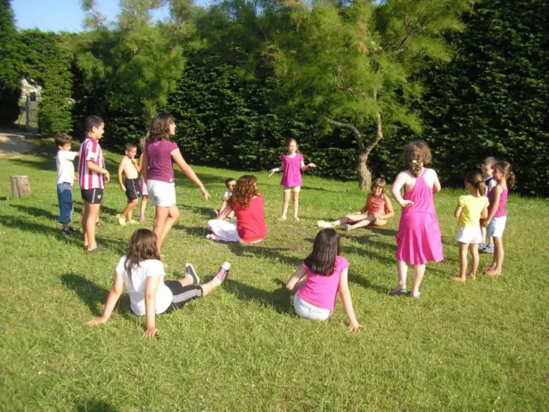

🔒 PREMIUM · 🌱 CONVIVENCIA
Convivencia en zonas verdes
Pasar tiempo en espacios naturales puede favorecer la convivencia, la actividad física y la conexión con el entorno.
⏱ 30–60 minutos
🔒 Ver actividad Premium →